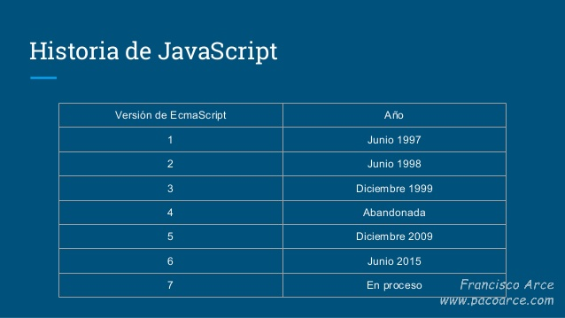

Historia
La historia de JavaScript empieza a comienzos de los 90, cuando los usuarios llegan a Internet y acceden a la Web gracias a los navegadores. Las conexiones entre los usuarios y las webs se hace a través de líneas muy lentas. Cuando el usuario quiere enviar información al servidor, si es incorrecta, tarda un tiempo en saberlo…y pierde la información.
Los programadores tratan de conseguir validaciones en el navegador y así tener siempre envíos positivos y minimizar la pérdida de información. Esto fue una de las primeras motivaciones para crear JS, validar los formularios.
El programador Brendan Eich comienza a colocar tareas del servidor en el navegador en una nueva versión de Netscape Navigator 2.0 (del año 95). Esta tarea cada vez fue más ambiciosa, y recibió el nombre de LiveScript. Cuando posteriormente Sun Microsystems compró Nestcape, le puso el nombre de JavaScript, muy parecido al nombre del lenguaje del lado del servidor (Java) que no tiene absolutamente nada que ver.

La relación entre JavaScript y Java es puramente comercial, no hay relación a nivel de programación, no tienen nada que ver. Simplemente, la confusión surge por la compra de los creadores de Java del navegador Nestcape.
Justo en este momento comienza la Guerra de los Navegadores, donde cada uno comienza a tener su propia versión de LiveScript, como Microsoft (JScript) que no era compatible. El principio del fin de la guerra se produce en 1997, cuando se crea el estándar ECMAScript por parte de varias empresas.
Sin embargo, Internet Explorer comienza a potenciar su navegador con JavaScript, a aplicarlo a juegos, a mejorar la experiencia de usuario, a facilitar las tareas de los programadores…pero fuera del estándar.
Sin embargo, para hacer esta tarea de compatibilidad más sencilla surgieron librerías como jQuery y otras muy semejantes. La librería jQuery permitía programar JavaScript de forma sencilla y compatible para todos los navegadores.

Poco a poco, todos los navegadores tomaron el estándar (Internet Explorer, principalmente) y JavaScript se convirtió en un lenguaje de programación compatible con todos los navegadores, y la necesidad de utilizar jQuery fue menor.
Posteriormente, se empezó a utilizar JavaScript en el lado del servidor (NodeJS) como sustituto de otros lenguajes como Java o PHP. A día de hoy se sigue avanzando mucho en esta tecnología.

¿Dondé nació JavaScript?
Fecha de cada version de JavaScript hasta el día de hoy
